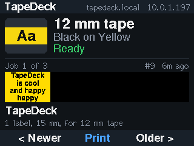

TapeDeck
Firmware 0.1.0: a web label editor and print server for a Brother PT-D600 P-touch, on an M5Stack Core Basic with the USB Module (MAX3421E). Design labels in a browser, print batches with one leader, reprint the last 25 jobs from the Core's buttons, and print from scripts over an HTTP API. Source, docs and licence (MIT) on GitHub.

1. Install the firmware
- Use Chrome or Edge on a desktop (Web Serial is needed; Safari and Firefox do not have it).
- Connect the Core's USB-C port to the computer.
- Click Install below and choose the Core's port (usually USB Serial or CP2104 / CH9102).
Installing replaces whatever firmware the Core had and erases its settings and job history. A Core that
already runs TapeDeck can update itself instead: Setup → Firmware on its web page, with the
-update.bin file from the latest release.
2. Set the USB Module's switches
The USB Module v1.2 has two tiny DIP switches on its PCB, next to the MAX3421 chip. They ship off, which leaves the module disconnected. Turn one channel of each on; the firmware finds whichever you chose.
| Switch | Set to | Pin |
|---|---|---|
| SS Select | CH1, CH2 or CH3 | G13 / G5 / G0 |
| INT Select | CH1 or CH2 | G35 / G34 |
Plug the PT-D600's USB cable into the module's USB-A port and power the printer from its own adapter.
3. Set it up
- The screen shows a QR code for a Wi-Fi network called TapeDeck-XXXX. Join it from a phone; the setup page opens by itself (or browse to http://192.168.4.1/setup). Pick your network and type its password.
- The Core joins your network and shows its address. Open http://tapedeck.local/ for the label editor, the job history and the API help.
- The printer reports the tape width but not its colours: click the tape chip at the top of the page (or hold B on the Core) and pick them. TapeDeck remembers each cassette.
Buttons: A newer job, B print it (press twice), C older job. Hold B for the info screen with the editor's QR code and the tape colour picker.